Analytics Dashboard
Gender distribution
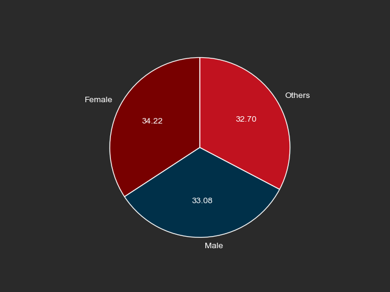
Subscription distribution
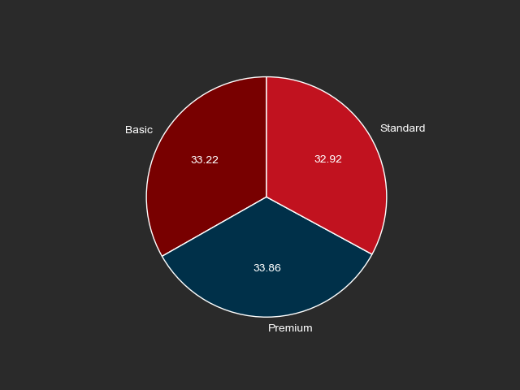
Region distribution
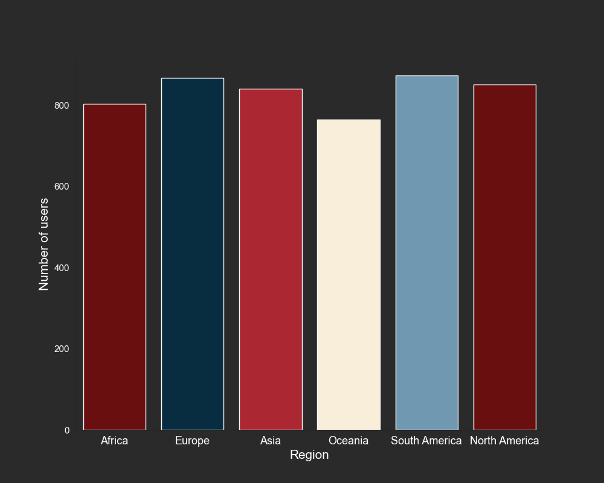
Age vs Users distribution
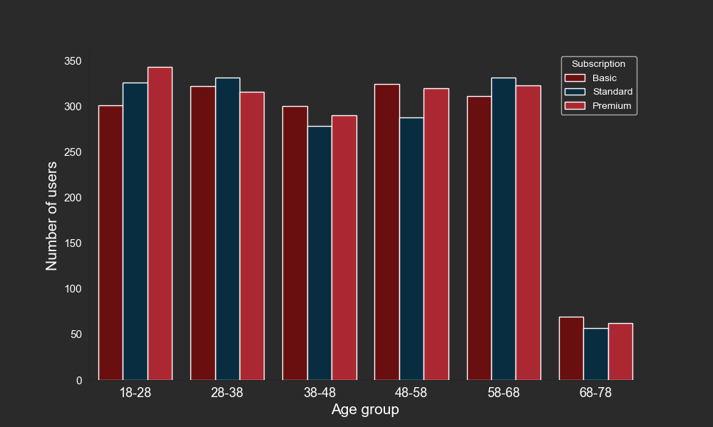
Age vs profiles distribution
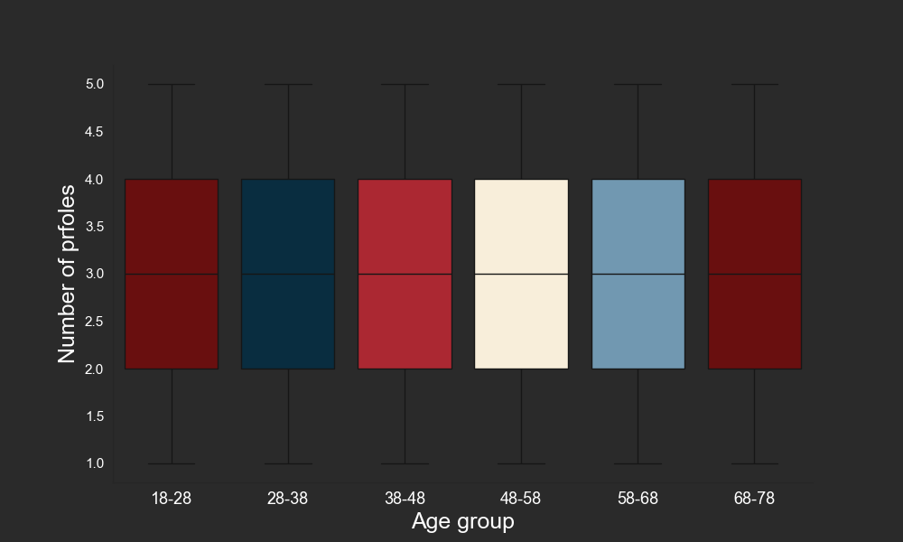
Age vs region distribution
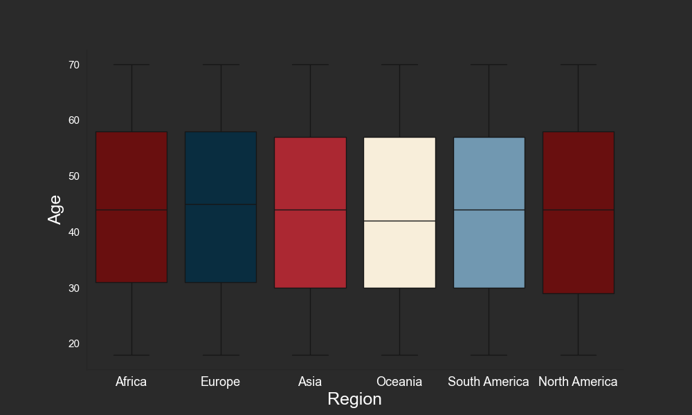
Genre vs user distribution
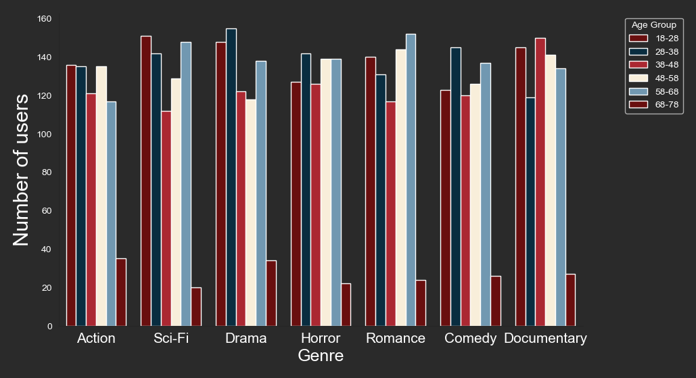
Age vs watch hour distribution
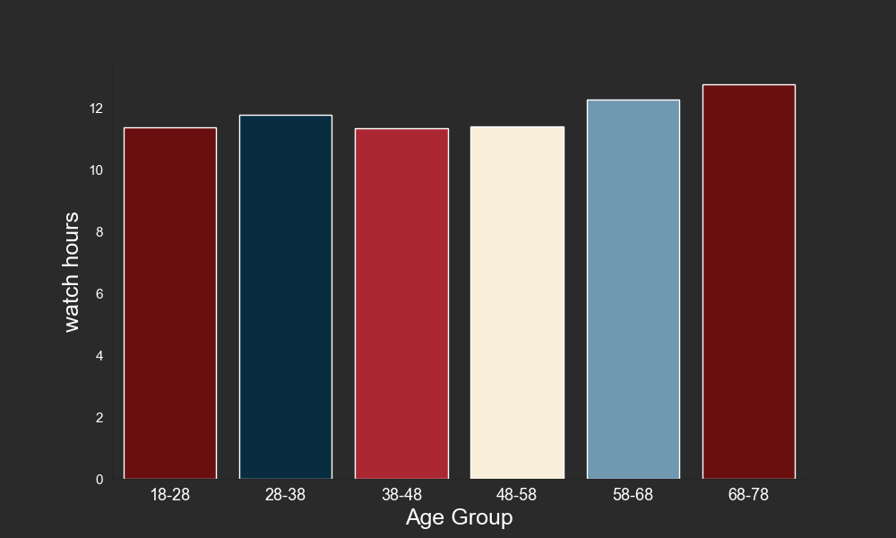
Age vs per day watch hours
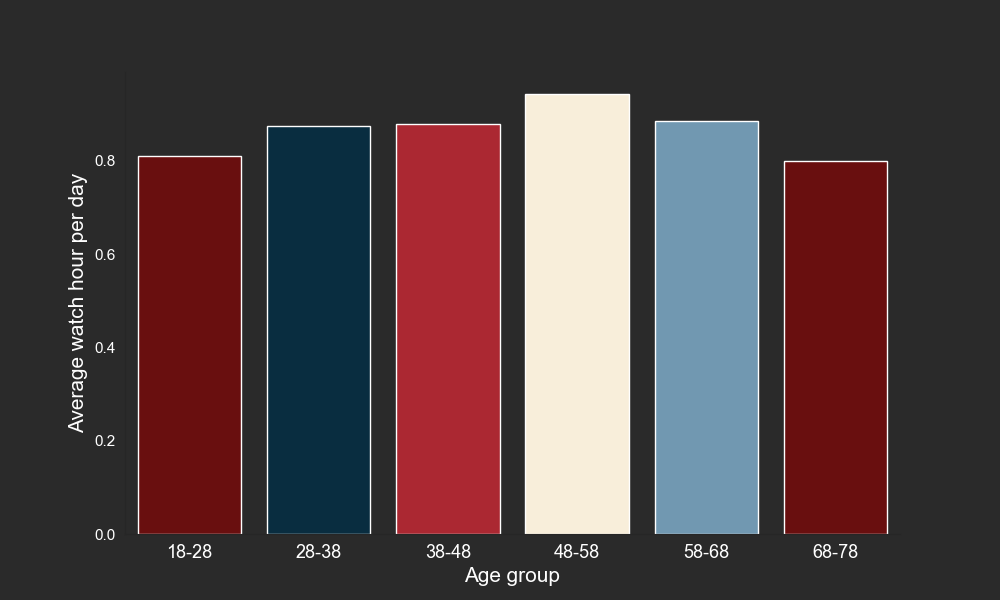
Active/inactive users
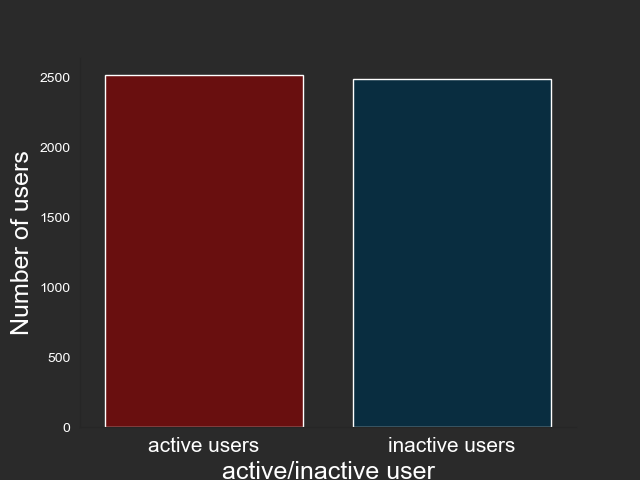
Last login days of user
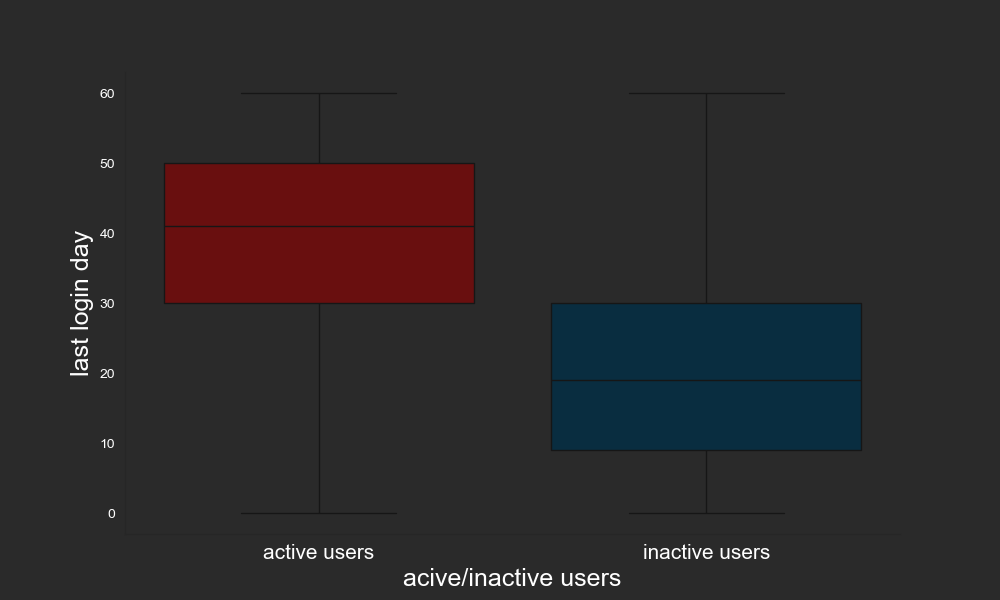